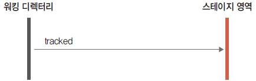

스테이지 영역은 워킹 디렉터리와 실제로 저장하여 기록하는 공간인 저장소 사이에 있는 임시 영역입니다.
워킹 디렉터리에서 작업된 변경내역이나 신규 파일을 저장소에 직접적으로 기록을 할 수 없습니다.
깃은 워킹 디렉터리의 작업들을 스테이지 영역으로 잠시 복사를 해두고, 스테이지의 내용을 저장소로 기록을 합니다.
다음 그림을 통하여 스테이지와 워킹 디렉터리 간의 관계를 확인할 수 있습니다.

스테이지는 단순한 임시 영역으로 작업한 컨덴츠의 실제 파일 내용을 직접적으로 가지고 있지는 않습니다.
임시영역인 스테이지는 단지 저장소에 기록을 할 수 있도록 추적 상태의 정보만을 기록합니다.
깃이 워킹디렉터리의 내용을 바로 저장소로 저장을 하지 않고, 중간 단계인 스테이지 영역을 가지는 이유는 저장소에 변경을 기록하는 커밋을 빠르게 처리하기 위해서입니다.
깃은 스테이지에 등록된 변경된 기록들을 저장소에 기록된 마지막 내용들과 비교하여 변경된 차이점만 기록합니다.
저장소는
실제로 저장하여 기록하는 공간으로 스테이지의 내용을 기반으로 저장됩니다.
깃은 스테이지의 상태를 확인할 수 있도록 status명령을 제공합니다. status명령에 대해서는 이후 좀더 자세히 알아보겠지만, 다음과 같이 입력하여 스테이지의 상태를 확인 할 수 있습니다.
$ git status
또는 깃의 git ls-files 같은 명령어로도 확인 가능합니다.
$ git ls-files --stage
스테이지 영역에 등록된 파일들은 또 다시 stage 상태와 unstage 상태로 구분됩니다.
버전 관리에서 제외하고 싶은 파일이 있다면 .gitignore 파일에 등록합니다.